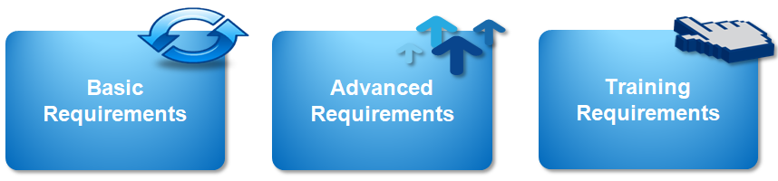

Manajemen Logistik
Logistik merupakan cara melakukan penyimpanan, pengiriman, penyaluran dan distribusi berbagai barang. Tujuan manajemen logistik ialah memastikan barang yang dikirim tepat dan sesuai, waktu pengiriman tepat dan cepat, serta barang tersebut aman sampai ke tujuan.
Dalam operasional logistik, tidak melulu hanya terpaku pada domain jasa pengiriman. Ada banyak faktor yang memengaruhi efektifitas pengiriman logistik, seperti kesesuaian barang yang dikirimkan dengan kebutuhan, cara penyimpanan barang di gudang, cara penyiapan pengiriman (pengemasan barang) hingga kesiapan serta kondisi operasional transportasi pengirim barang.
Dalam operasional logistik, tidak melulu hanya terpaku pada domain jasa pengiriman. Ada banyak faktor yang memengaruhi efektifitas pengiriman logistik, seperti kesesuaian barang yang dikirimkan dengan kebutuhan, cara penyimpanan barang di gudang, cara penyiapan pengiriman (pengemasan barang) hingga kesiapan serta kondisi operasional transportasi pengirim barang.
Manajemen logistik yang bagus adalah manajemen alur distribusi logistik yang efektif dan efisien sehingga dapat menghemat biaya untuk meningkatkan keuntungan perusahaan.
Dalam kenyataannya, ada banyak penyimpangan yang terjadi dalam pengiriman logistik, sehingga manajemen logistik yang dirancang sedemikian rupa menjadi kurang maksimal. Beberapa diantaranya seperti ketidaksesuaian volume barang yang dikirim dengan barang yang sampai di tujuan, ketidaktepatan waktu pengriman barang, hingga ketidaksesuaian informasi lokasi dan keadaan barang secara real time.
Yang Kami Tawarkan
Kami menyediakan sistem terpadu untuk mendeteksi dan meminimalisir resiko maupun kecurangan yang terjadi dalam pengiriman logistik. Sistem yang kami tawarkan berupa pemantauan volume dan / jenis barang yang dikirim menggunakan sensor, dan datanya dapat dipantau secara real time. Pengiriman logistik juga akan tervalidasi di setiap titik distribution point sehingga masalah keterlambatan atau kehilangan logistik dapat terpantau dengan baik dan cepat sehingga penanganan masalah dapat dilakukan seefektif mungkin.

Basic Requirement
Kami menyediakan beragam sistem terpadu untuk memvalidasi barang yang dikirim agar sampai dengan utuh dengan jumlah yang sama ketika awal dikirim. Kami juga menyediakan menu tracking barang lengkap disetiap titik, serta pemberitahuan / alert ketika ada masalah dalam pengiriman
location_on
Tracking Logistik
Verifikasi satu arah setiap barang / logistik melewati distribution point sehingga keaslian barang benar-benar terjamin dari sumbernya. Dapat di tracking atau dipantau secara real time berikut estimasi waktu sampai ke distribution point berikutnya hingga perkiraan sampai ke tujuan akhir.
assignment_turned_in
Validasi Logistik
Mencocokkan kesesuaian barang dan volume barang yang sampai dengan keadaan ketika dikirim. Memastikan tidak ada kecurangan maupun kehilangan barang di tengah jalan. Validasi dapat dilakukan di titik akhir barang maupun titik tengah dari distribution point
report_problem
Pemberitahuan Masalah
Menampilkan pemberitahuan melalui beragam platform (website, aplikasi mobile, e-mail gateway maupun sms gateway) apabila terjadi masalah dalam pengiriman logistik. Seperti volume barang berkurang drastis, terjadi perubahan atau pertukaran barang ditengah pengiriman, maupun masalah operasional seperti kerusakan kendaraan transportasi.
Advanced Requirement
Kami menyediakan beragam sistem terpadu untuk memvalidasi barang yang dikirim agar sampai dengan utuh dengan jumlah yang sama ketika awal dikirim. Kami juga menyediakan menu tracking barang lengkap disetiap titik, serta pemberitahuan / alert ketika ada masalah dalam pengiriman
Training Requirement
Kami mempersiapkan pelatihan untuk pengguna, administrator, pejabat berwenang mengenai sistem.